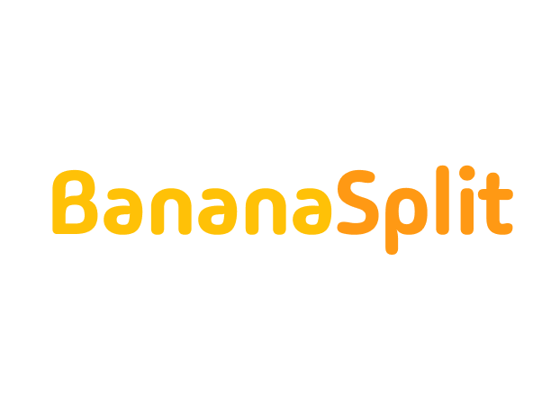
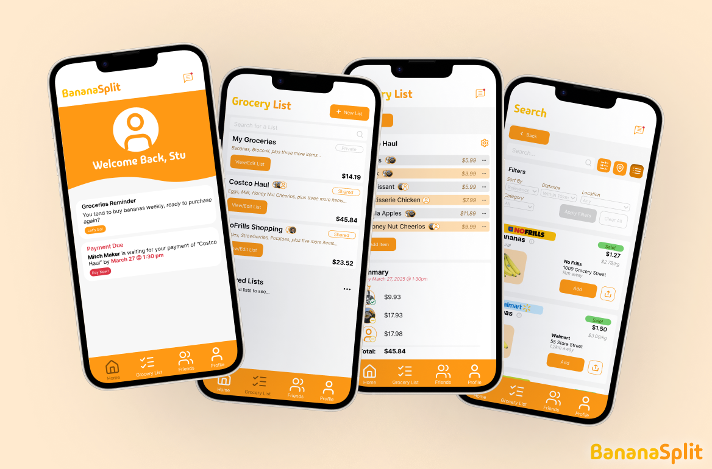
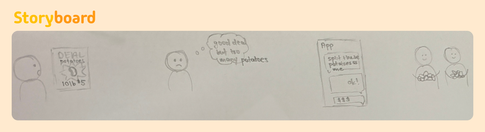
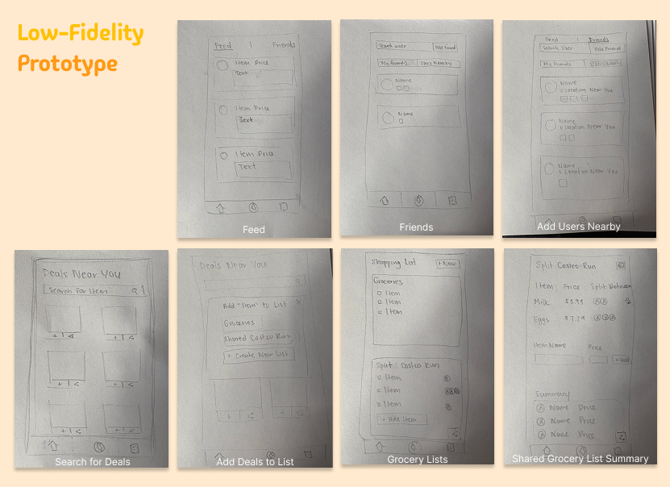
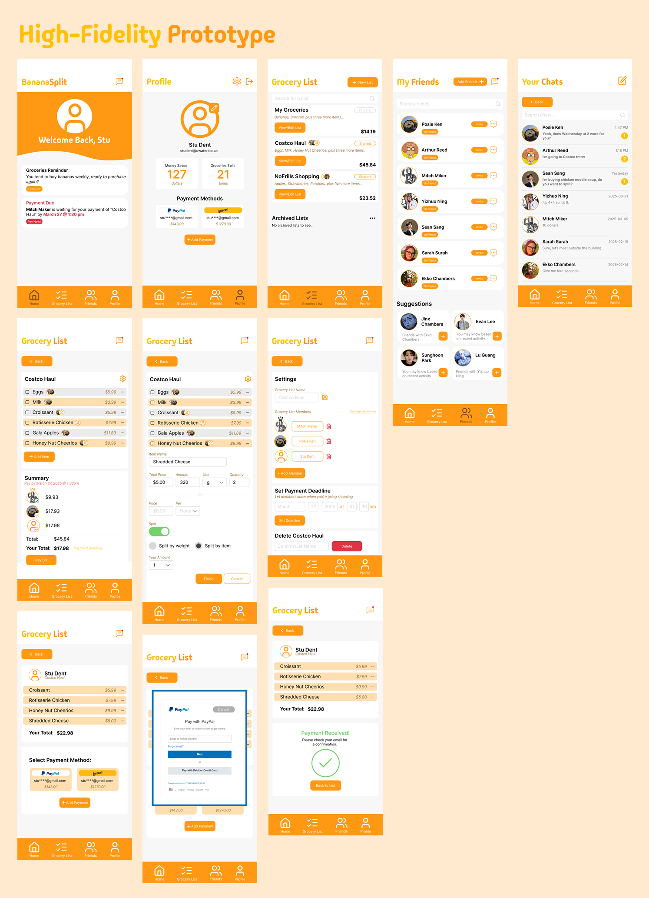

BananaSplit
Course: GBDA 210 - Introduction to User Experience
Timeline: February 2025 - March 2025
Role: UI Designer, UX Researcher
Team: Team of 4

Problem Statement
Grocery shopping is expensive, and on top of tuition and housing expenses, it can be hard to eat well without breaking the bank. While buying in bulk does decrease the cost per unit, it often leads to overconsumption and waste. As a result, students miss out on savings.
User Research
I interviewed various university students (ages 18-21) who regularly cook their own meals. The interviews focused on current grocery habits, pain points, and existing workarounds.

Key Insights
Store Preferences
Students shop at stores like Costco, T&T, and No Frills for affordability, selection, and proximity, often with friends and roommates.
Budget Awareness
All participants actively budget and look for deals using apps like Flipp, though flyer apps often miss products they need.
Transportation Barriers
Public transit limits how much they can carry, influencing how often and where they shop.
Desire for Tools
Students want smarter tools to coordinate trips, split costs, and compare prices before going out.
Design Process
At first, our app idea overloaded on features aimed to help the user save money: a main feed showcasing friends' listings for grocery items they wanted to split, a grocery list tab for managing both private and shared lists, and a search function to find nearby grocery deals.


Having all of these features made the user flow confusing, so we focused on efficient grocery list splitting, and built the rest of the features around making that process efficient.
Solution

Key Features
- Organized Private and Shared Grocery Lists
- Intuitive Grocery Splitting: Know how much each person owes
- In-App Payment Handling
- Reminders and Notifications: Don't forget to pay your share!
- Messaging System: All discussions are in the app
User Testing
After our first iteration of the high-fidelity prototype, we conducted a round of user testing, presenting our product to 20+ users. We pitched a 2 minute presentation outlining our project purpose and design process, followed by a user testing session.
User Feedback
Reflection
What I Learned:
- Users value simplicity, trust, and consistency, don't try to overload features in your app.
- Prototyping is an iterative process. Our shift from a marketplace listing system to shared grocery lists showed me how it's important to match real user behaviors.
- User testing is so valuable in gaining insight and issues you may have missed.
Explore the prototype here!